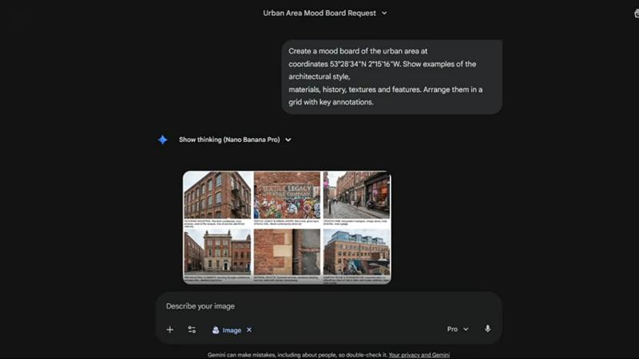
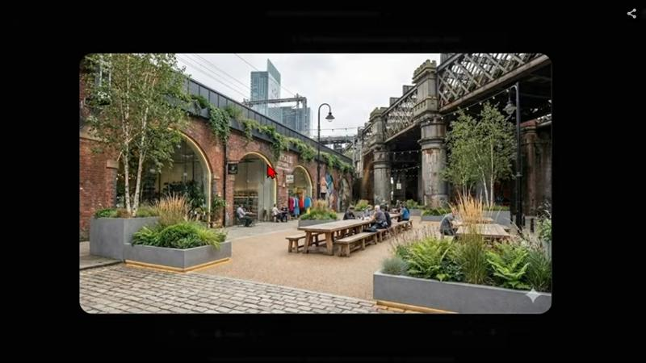
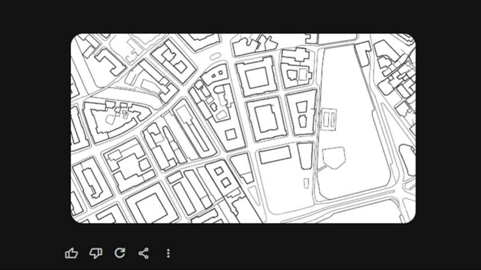
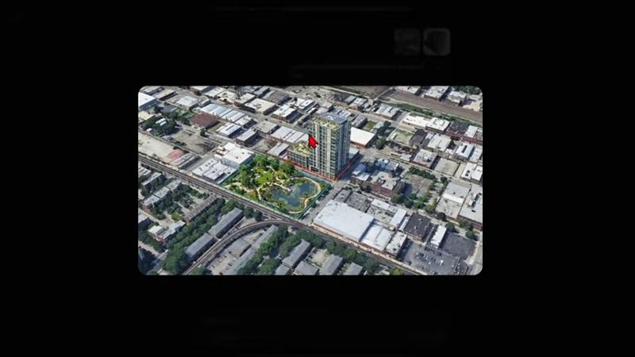
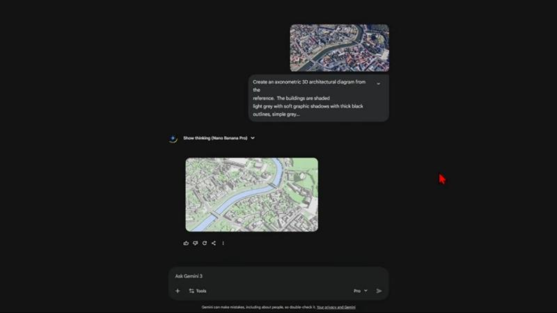
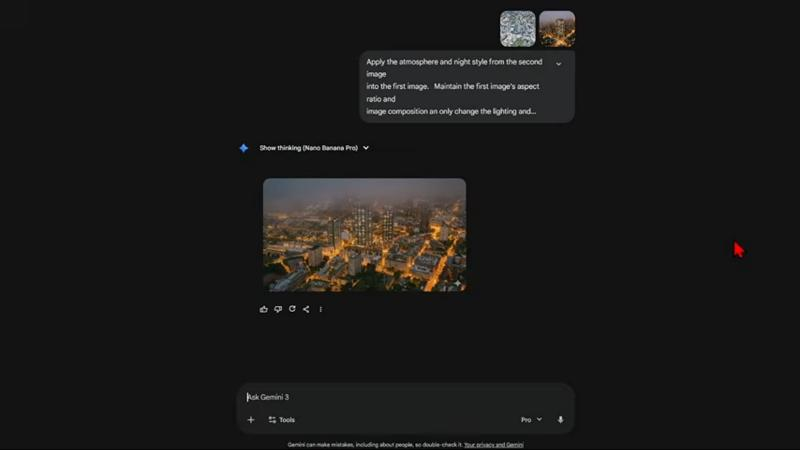

The genuinely new capability in the Pro model is that it recognises world coordinates and can pull real information about that location. That turns Google Earth from a source of screenshots into a source of site data — useful precisely when you have been handed a site and almost nothing else.
Get coordinates by right-clicking any spot in Google Earth or Google Maps and copying them. Everything below starts there.
1. A mood board of the actual place
Paste the coordinates and ask for what you want extracted:
Create a mood board of the urban area at [coordinates]. Show examples of architectural style, materials, history, textures and features. Arrange them in a grid with key annotations.

What comes back is pulled from real imagery of that area, and it reads as the character of the place rather than a generic palette. Use it in a report, or feed it forward as a reference into the next step.
2. Renovate an existing street
Go to street view, find the underused space, screenshot it. Drop it in and ask for an intervention — referencing the mood board so the materials stay local.

The context holds and the changes are plausible because the materials came from the place itself.
For control, stop describing and start marking. Take the image into Photoshop or any paint tool, highlight areas in different colours, and write the prompt as a key:
Make the changes to the photo in the highlighted colour areas as per the description below.
Then describe each colour. It makes the change in each area, which is the difference between a design assistant and a slot machine.
3. Line drawings you can actually vectorise
Sometimes you need editable geometry, not a picture. Paste a 2D map and ask for:
Create a 2D CAD line image of this map reference. Clean black lines on a white background. [line weights, what to define.] Remove trees, labels, colours and textures.

Bold and continuous is what you want, because the next step is tracing. Illustrator has image trace; Rhino has a plugin; Inkscape is free and very good at it — drag the image in, Path → Trace Bitmap, adjust thresholds, preview, accept.
Save as SVG and open it in your CAD software. Many building outlines come through closed, so they hatch. It is a starting point when you have no site plan, not a survey.
For urban segmentation, run it again asking for only buildings, solid black on white, and vectorise that as a separate layer. Repeat per layer and you have build-up you can control.
4. Insert a building into context
This works best with an aerial perspective of your building on a white background — and if it isn't, ask for the background to be removed first.
Find the site in Google Earth, then mark it up: red for the outline where the building goes, green for the park, brown for the paths. Different colours for different elements.
The prompt names each one:
Insert the tower reference project into the red area of the Google Earth screenshot. In the green, a lush contemporary public park with a pond. In the blue area and footpaths along the brown lines.

Positioning, scale and the landscaping all land. The coloured boundaries come through too — keep them if you want a diagram, or prompt them away for a clean aerial. You can also ask it to rotate the building on the site.
5. Flat buildings, turned into 3D
Google Earth's 3D data is thin in places and absent in others. A famous building that reads as a flat smear in the tiles can be reconstructed:
Create a realistic isometric photo of [building name] at [coordinates], placed on a white background.
The name and coordinates together are what drive accuracy. Galaxy SOHO in Beijing came back as a credible organic form — not exact on levels, but right in shape, and clean enough to run through an image-to-3D generator and get actual geometry.
Add more reference images if the building is less well known.
6. Massing diagrams instead of satellite mush
Google Earth has 3D geometry but it is low resolution and reads badly in a presentation. Screenshot a 3D view — trees, rivers, roads included — and ask for:
Create an axonometric 3D architectural diagram from this reference.

Specify building and road colours and line thicknesses. The result sits closer to a SketchUp massing aesthetic — far easier to read in site analysis, and it matches the rest of your drawings instead of fighting them.
7. Clean up street view
Street view is obscured by cars, fences, hoardings and signage. Paste it in and ask for them to be removed. It does exactly that. Then remove the lamp posts and the Google interface icons on a second pass.
Useful when you want the context for rendering or massing over, without the clutter. And you can go further: take a drone view of the site looking down — with a red line boundary if you want one. No drone hire, no roof access, for initial references.
8. Annotated context maps
With coordinates plus a screenshot, the annotations get noticeably more accurate. In a central area with recognisable buildings:
Highlight a few of the key buildings, areas and zones in this reference at [coordinates] in an infographic style, with a red outline of the building and a black info callout with a formatted paragraph of details. Details to include: name, architecture, construction dates and important facts.
If everything comes back in one colour and reads badly, ask for the groups to be separated by colour. Small fix, much better drawing.
And a style transfer, for the hero image
Combine a Google Earth aerial with a reference image whose atmosphere you want:
Apply the atmosphere and light style from the second image to the first image. Maintain the first image's aspect ratio and image composition, and only change the lighting and atmosphere.

That constraint — composition and aspect ratio held, lighting only — is what keeps it a map of your site rather than a new picture. The example here is deliberately extreme; subtler references give you presentable context imagery that still matches the place.
The pattern underneath all eight
Give it real coordinates, give it a marked-up image, and say what to preserve as well as what to change. Every one of these is a variation on those three.
And check the output. These are a starting point for site analysis when you have limited data — not a survey, and not a source of fact.